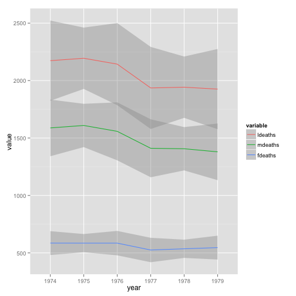

library(dplyr)
meltedlungs %>% group_by(year,variable) %>% summarise(average=mean(value),sd=sd(value),N=n())
## Source: local data table [18 x 5]
## Groups: year
##
## year variable average sd N
## 1 1974 ldeaths 2178.3333 494.5983 12
## 2 1975 ldeaths 2175.0833 602.2528 12
## 3 1976 ldeaths 2143.1667 831.8715 12
## 4 1977 ldeaths 1935.7500 552.0763 12
## 5 1978 ldeaths 1995.9167 621.5696 12
## 6 1979 ldeaths 1911.5000 572.2454 12
## 7 1974 mdeaths 1589.2500 328.7890 12
## 8 1975 mdeaths 1603.9167 427.5011 12
## 9 1976 mdeaths 1558.0833 579.8723 12
## 10 1977 mdeaths 1410.5833 391.8700 12
## 11 1978 mdeaths 1444.0833 451.1524 12
## 12 1979 mdeaths 1369.7500 414.8553 12
## 13 1974 fdeaths 589.0833 169.7412 12
## 14 1975 fdeaths 571.1667 176.1502 12
## 15 1976 fdeaths 585.0833 252.6066 12
## 16 1977 fdeaths 525.1667 162.8479 12
## 17 1978 fdeaths 551.8333 170.8869 12
## 18 1979 fdeaths 541.7500 160.0080 12
Why is this useful?
library(ggplot2)
## Warning: package 'ggplot2' was built under R version 3.1.3
ggplot(meltedlungs,aes(x=year,y=value,group=variable,colour=variable))+geom_smooth()
## Don't know how to automatically pick scale for object of type ts. Defaulting to continuous
## geom_smooth: method="auto" and size of largest group is <1000, so using loess. Use 'method = x' to change the smoothing method.
